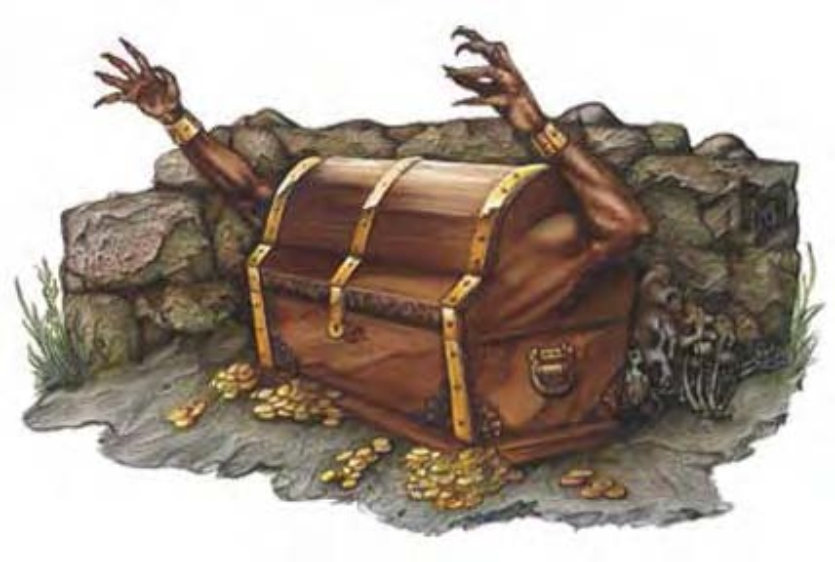

原本看起来是物体的玩意儿露出了活动迹象，好似一个突然爆出了手脚的生物。
拟身怪是诡异且致命的生物。它们可以改变形状及颜色，诱使倒霉的受害者靠近再加以杀害。据说拟身怪并不是自然生物，而是在久远以前由一位已被遗忘的法师所创造。由那时开始，这种恐怖生物就以护卫宝藏为己任。
拟身怪的体形可向四面自由伸展，但通常身长不会超过10英尺。一般的拟身怪体积约150立方英尺，重达4500磅。
拟身怪通晓通用语。
| 资料栏位 | 拟身怪 (Mimic) 大型异怪 (变形) |
| 生命骰 | 7d8+21 (52HP) |
| 先攻 | +1 |
| 速度 | 10英尺 (2格) |
| 防御等级 | 15 (-1体型、+1敏捷、+5天生)、接触10、措手不及15 |
| 基本攻击/擒抱 | +5 / +13 |
| 攻击 | 挥击+9近战 (1d8+4) |
| 全力攻击 | 2挥击+9近战 (1d8+4) |
| 占据/触及 | 10英尺 / 10英尺 |
| 特殊攻击 | 黏胶、碾压 |
| 特殊能力 | 黑暗视觉60英尺、对强酸免疫、拟形 |
| 豁免 | 强韧+5、反射+5、意志+6 |
| 属性 | 力量19、敏捷12、体质17、智力10、感知13、魅力10 |
| 技能 | 攀爬+9、易容+13、聆听+8、侦察+8 |
| 专长 | 警觉、快速反射、专攻武器 (挥击) |
| 环境 | 地底 |
| 组织 | 单独 |
| 宝藏 | 十分之一钱币、50%宝物、50%物品 |
| 阵营 | 通常绝对中立 |
| 进化 | 8-10HD (大型)；11-21HD (超大型) |
| 等级修正值 | ― |
冒险者经常会出乎意料地遭拟身怪伏击。拟身怪利用重型伪足进行攻击，但若能夺得宝藏或食物，他们不会奋战至死。
黏胶 (特异)：拟身怪会渗出浓稠的黏液，像强力胶一样黏住接触到的生物或物品。满身黏胶的拟身怪会自动擒抱住挥击击中的生物。在拟身怪死亡之前，若未移除这些黏胶，则被擒住的对手完全无法脱身。若武器击中满身黏胶的拟身怪，且持有者未通过反射检定 (DC=16)，则武器会被卡住。通过力量检定 (DC=16) 方可拉开。烈酒可以溶解黏胶，但拟身怪仍可正常擒抱。拟身怪可随时溶解自己的黏胶，若他死亡，则黏胶约在5轮后瓦解。
碾压 (特异)：若擒抱检定成功，拟身怪可造成1d8+4点伤害。
拟形 (特异)：拟身怪可仿任意物体的外观，体积可达150立方英尺（5英尺乘5英尺乘6英尺），例如沉重的宝箱、宽床或门框，但不能自由改变体型大小。无论化为何种外形，拟身怪的身体都保持坚硬粗糙，只要通过对抗拟身怪“易容”检定的“侦察”检定，就可以识破他的奸计。不过通常都已经来不及了。
技能：拟身怪在进行“易容”检定时具有+8种族加值。